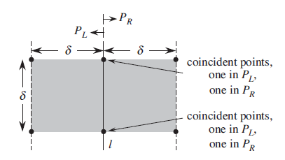
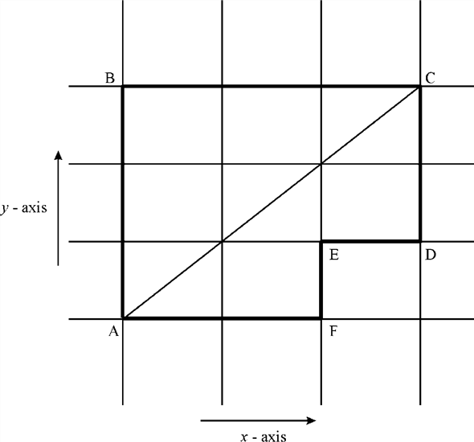
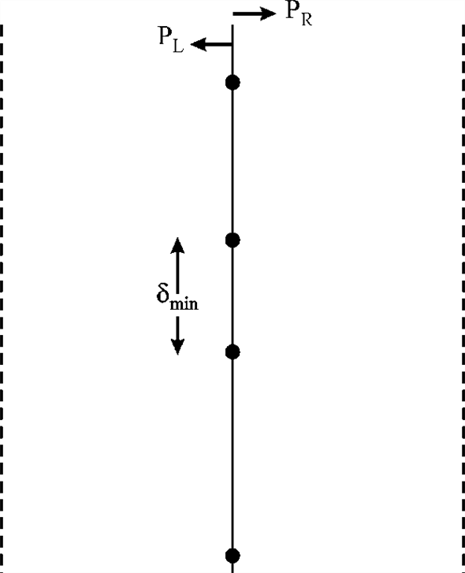
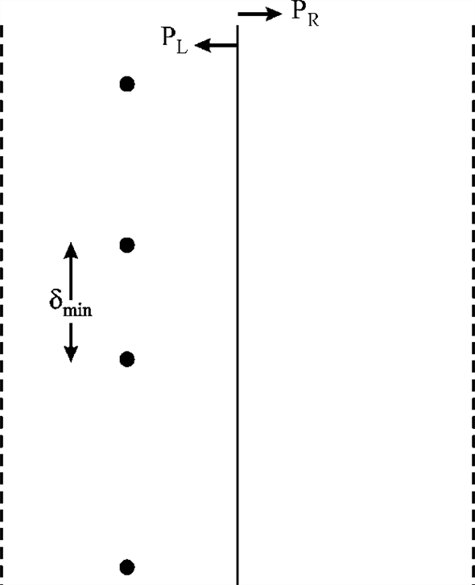
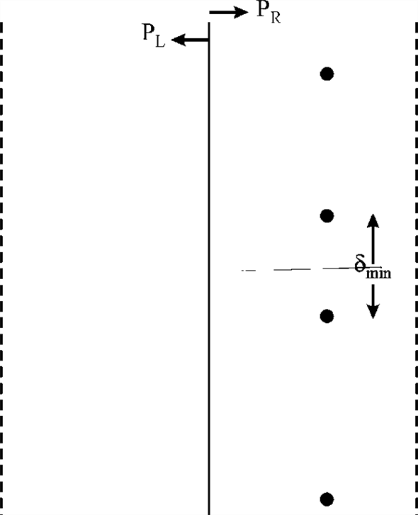

Scheme of Checking only 5 Points Instead of 7 in Closest Pair Algorithm
Closest pair algorithm is used to find the length between two points such that the measured length is minimum
length. In this algorithm, the divide and conquer approach is used
that is the point set P is divided into two parts
PL and PR by a straight
vertical line whose x and y coordinates of points are
stored in the arrays X and Y in the sorted order.
Consider the figure given below: and is
represented as. distance
between them and one point is on the left of line and the other one
is on the right side of line. For this, an array Y’ is
created which stores the points which are at the distance less than
in
which at most 8 points can reside in the rectangle . So for
each point p, minimum 7 points are checked for minimum
distance.
is minimum
length. In this algorithm, the divide and conquer approach is used
that is the point set P is divided into two parts
PL and PR by a straight
vertical line whose x and y coordinates of points are
stored in the arrays X and Y in the sorted order.
Consider the figure given below: and is
represented as. distance
between them and one point is on the left of line and the other one
is on the right side of line. For this, an array Y’ is
created which stores the points which are at the distance less than
in
which at most 8 points can reside in the rectangle . So for
each point p, minimum 7 points are checked for minimum
distance.In the closest pair problem, the assumption is made that in rectangle, there will be 8 points that is 4 in the left square PL and 4 points in the right square PR and there is no point on the line.
According to the idea given by Professor Williams on the closest pair problem, the points on the right side of left square and the points on the left side of right square are same that is two points are reduced. Now, there are total 6 points and for every point p, only 5 points have to be checked to find the closest pair.
So, only 5 points reside in the array Y’ and it saves number of points that are checked every time reducefrom 7 to 5. This approach does exactly what closest pair finding approach with 7 points is supposed to do with less number of comparisons in each recursion.
Thus, this technique is subtle and there is no flaw in it.A simple thing that can be observed in this illustration is that the professor’s idea is all about the reduction of the size of the problem, but to change the basic strategy that is used to solve the problem.
Hence, Professor Williams’ scheme of checking only 5 points instead of 7 in the array Y’ works enough appropriately for the closest pair problem.
Efficiency of Checking only 5 Points Instead of 7 in Closest Pair Algorithm
Consider the closest pair algorithm which is used to find the
length between the points P such that the measured length
is
minimum length. In this algorithm, use the divide and conquer
approach that is the point set P is divided into two parts
PL and PR by a straight
vertical line whose x and y coordinates of points are
stored in the arrays X and Y in the sorted order.
Consider the figure given below:
The x and y coordinates of points of left and right side of line are stored in XL, XR and YL, YR. From left and right side the minimum distances are and so.
Now, it is to be checked that if there is any pair of points
with less than distance
between them and one point is in left of line and the other point
is in the right of line.
For this an array Y’ is created which stores the points which are at the distance less than in which at most 8 points can reside in the rectangle so for each point p, minimum 7 points are checked for minimum distance. Now, proving that for each point p, it is sufficient to check only 5 points following p in the array Y’.
In the closest pair problem the assumption is made that in rectangle there will be 8 points that is 4 points in the left square PL and 4 points in the rightsquare PR. Consider the figure given below:

According to the figure given above, Y’ will contain the elements which lies in the rectangle. The points in the right side of left square and the points in the left side of right hand square are same that is two points are reduced.
Now, there are total 6 points and for every point p it is required to check only 5 points to find the closest pair. So, only 6 points reside in the array Y’ and it saves the number of points that are checked every time from 7 to 5. Thus, it is sufficient to check only 5 points in the array Y’.
Consider the 33.4-1 of this text book, To justify this, first consider the above diagram which has a line l and two dotted lines one is left of l and another one right to l both are away to l at a distance of delta.
This area makes a region same as rectangle, but in closest pair algorithm analysis, consider 8 points which lie on this reason and equal number of points lies in this region, that is, 4 and 4.
One consideration is that “no point lies on the line l” but according to professor, if one point is on the line for both the regions then total number of points would become 6 because left and right regions have equal number of points so here, both points count on both the region.
In earlier approach if there are 8 points in that rectangle and no point lies on the line l but according to the professor’s approach 1 points for both the region lies on that line l which makes count 6 in case of comparison because minimum distance formula gives the length in horizontal way not in vertical way.
So, according to professor, one point has to be compared with other 5 points. Hence, it actually suffices to check only 5 points in the array Y’ in closest pair problem for every point in therectangle.
Consider between two
points  and
and
 as:
as:
Such that for it
calculates Euclidian distance; now modifying the closest pair
algorithm by using is the
Manhattan distance between points and for each
point in point set P.
It is the distance measured by calculating the number of horizontal and vertical components in the path of grid form. The path followed for getting the Manhattan distance is a series of paths that are essentially vertical or horizontal but not diagonal.
So,
Closest pair algorithm is an algorithm which is used to search a
pair of pointsand
in
a set of points P with shortest lengthbetween
them. To find these points, divide and conquer approach is used in
which the points are divided into two set of points by making a
vertical straight line l between them. l is the
mid-point of all the points sorted according to the X
co-ordinate.
After calculating the distances and
for
both the parts, find. But this
is not the minimum distance because there could be a pair of point
such that one of it is on the  side and
the other is on the side with
distance between them is less than..
Therefore, find such a distance if exists. The minimum of all the
three is the required closest pair distance. Return the minimum
distance and the pair of points which possesses that distance.
side and
the other is on the side with
distance between them is less than..
Therefore, find such a distance if exists. The minimum of all the
three is the required closest pair distance. Return the minimum
distance and the pair of points which possesses that distance.
Consider the following figure depicting closest pair using Manhattan distance:

In the figure given above, the Manhattan distance is the distance obtained by adding the distance of AB and BC or AF, FE, ED and DC. Both are Manhattan distances. It is because both are the addition of distances betweenA and C that are obtained by adding distances ofx-axis and y-axis.
The distance that has been provided by closest pair algorithm is AC.For making the changes in the closest pair algorithm and to use in the set of points P, firstly divide the point set into two parts PL and PR by a straight vertical line whose x and y coordinates of points are stored the sorted order. Consider the figure given below:
After finding the minimum distance for left side and right side,
compute the same for the middle. In the middle the maximum total
number of points can be computed because there is a constraint that
the distance should be less than the previously found.
For every point close to the middle line, there can be minimum
distance with a point on the other side which is at most distance
from it. Similarly, the maximum distance to the
. This
results in a maximum of 6 points in each rectangle – one above, one
below and one is the reference point itself. Then there are 3 more
points in the horizontal direction with distance
apart.
So, once and are found, total of 6 more points have to be compared. This is the merging part of the sub-problems and so it takes constant time asymptotically.
Pseudo code for the procedure is the following:
procedure closest_pair_manhattan (P, left_p, right_p)
// P is the collection of points. The closest pair to be found between left_p and right_p.
// If there are less than 2 points then closest pair distance
is 
1. if p_size < 2, return
// the middle point is found out.
2. middle_p = (left_p + right_p) / 2
// the x co-ordinate of the middle point is the line which will divide the problem in this divide and conquer strategy
3. middle_xc = P[middle_p].x
// the closest pair on the left side of the middle line is found out.
4. delta_left = closest_pair_manhattan (left_p, middle_p)
// the closest pair on the right side of the middle line is found out.
5. delta_right = closest_pair_manhattan (middle_p+1, right_p)
// the minimum of the two deltas is found out.
6. delta=minimum (delta_left, delta_right)
// There could be minimum distance at middle, so find the candidates to consider for it.
7. left_candidates = select_left_points (left_p, middle_p, delta, middle_xc)
8. right_candidates = select_right_points (middle_p+1, right_p, delta, middle_xc)
// Find the minimum delta among the candidates found.
9. delta_middle = find_delta_middle (left_candidates, right_candidates, delta)
// the result of the sub-problems is merged in this step.
10. merge (left_p, middle_p, right_p)
// the minimum delta is the minimum of the three possible deltas.
11. return minimum (delta_left, delta_middle, delta_right)
Analysis of the algorithm:
In order to divide the problem into sub-problems, constant work is needed as it is done by a single step only but then merging has to be done for each split.
• Divide: The problem is divided into two equal sub-problems at each step.
• Merging: In this step, the result of the sub-problems
is merged. As seen in previous step, there can be at most 6
candidates to compare during the merge step, so it takes constant
asymptotic time. And there can be at most  points in
the middle strip. So, it can take at most.
points in
the middle strip. So, it can take at most.
Write down the recurrence relation for the algorithm as follows:
Let the asymptotic time complexity of the algorithm be denoted
by 
An asymptotic solution to the above recurrence relation is given by the Master Theorem.
Master Theorem
For the recurrence relation such that is of the following form:
The above has the constraints that, b
is an integer greater than 1, and c and d are real
numbers with c positive and d nonnegative. Then the
 notation is
the following:
notation is
the following:
Observe that equation (1) is of the form that satisfies the Master Theorem. Comparing it with the above formula, .
Case2 is satisfied, therefore,  .
.
Hence closest pair algorithm can be implemented using Manhattan distance with the estimate for time complexity being .
Consider P[] represents the array of points.
and are two
points in the plane.
The distance between the two points and
is
.
Consider the following modified closest pair algorithm that uses in closest pair:
//Defining the length between two points on a plane
1.
//Use of for loop to trace each and every point
2. for i=1 to length (P) – 1
3. for j = i+1 to length (P)
4. suppose ,
//Comparing whether the distance of current point is less than the previous
//traced points
5. if ;
//Setting the distance of current point as the L∞
6.
7. closestpair = (p, q)
8. return the closest distance
9. return closestPair
In the algorithm given above, the modification has been made in such a way that it can be found out how far one point is from another.
• Here the distance which is maximum of x co-ordinate and y co-ordinate so the distance can be any of x-coordinate or y-coordinate gaps.
• The algorithm uses divide and conquer approach to find the closest pair and then finds the minimum distance among the calculated distances.
• Whenever it is needed to measure the distance,can be used instead of Euclidean distance.
So, the algorithm given above would get the minimum distance between two points on a plane using the maximum distance measure .
Closest Pair Algorithm:
Closest pair algorithm is an algorithm which is implemented for searching a pair of pointsand in a set of points P with shortest lengthbetween them.
Two methods such as “brute force” and “divide and conquer” approach can be used to find the closest pair among the points.
These points can be found using a faster and improved divide and conquer strategy as compared to the brute force approach.
In the divide and conquer strategy, the concerned points are
distributed in two set of points, that is, and
by
making a vertical straight line l between them.
Calculate the distances and
for both the parts and then
check that if there is a pair of points one in and the
other in and the
distance between them is less than.
Return the minimum distance and the pair of points which possess that distance.
Now, consider the closest pair algorithm for theco-vertical points (points having same x co-ordinates) in set P.
Determine the sets and
which are formed after the division of the set P into the
subsets.
Determine each and every point of set Y in sets and
.
The changes to the algorithm don’t affect the running time and
the time complexity of modified closest- pair algorithm
remains .
.
If of the points are given as co-vertical, that is, they have same x-coordinate. The major problem comes while splitting P into and. This leads to three cases given below:
Case 1:
All the points lie on the line l. In this case, all the points are considered as left points and lie in.

Case 2:
All the points lie left of the line l. In this case, all the points are considered as left points and lie in.

All the points lie right of the line l. In this case, all the points are considered as right points and lie in PR.

In all the three cases, minimum distance has been taken into consideration and is returned by the algorithm.
The Euclidean formula for finding the distance between two points is given below:
Since all the points are co-vertical, the difference between the x-coordinates will be zero. That is .
The Euclidean formula given above will be reduced as follows:
The distance between two points is equal to the difference between their y-coordinates.
Here, the complexity of the closest pair algorithm remains same as changes has no effect on the running time. The reason is that the recurrence relation is directly same as final value of relation or complexity of the closest pair algorithm.
The calculation of extra n is not considered because points are co-vertical (points have constant x co-ordinate). So, the same running time of the closest pair algorithm remains unaltered.
Consider the closest-pair algorithm for a set of points P in which two pre-sorted arrays X and Y are used to store the values of x and y co-ordinates respectively.
Changing the algorithm that takes the array Y which is
not pre-sorted and still the algorithm takes  time to
run.
time to
run.
• Closest pair algorithm is an algorithm which is used to search a pair of pointsand in a set of points P with shortest lengthbetween them.
• To find these points, divide and conquer method is used in
which the points are divided into two set of points that
areand
by
making a vertical straight line l between them. The
x and y coordinates of points of left and right side
of line are stored in XL, XR
and YL, YR.
• After that, the distances and
for both the parts and find, and after
that find if there is a pair of points one in and the
other in and the
distance between them is less than; return the
minimum distance and the pair of points which possesses that
distance.
Consider the figure given below:
In the figure given above, the points and
represent the points at the left and right side of line l.
These points are combination of the arrays X and Y
which are used to store x and y coordinates of
points. The points in the left and right side of line are stored in
XL, XR and
YL, YR.
• At the initial level, there is no need of sorted Y array; it is because the points are considered on the basis of the x-coordinates.
• This terminates the need for sorting the array Y initially. This array would later be sorted in divide and conquer algorithm of closest pair problem.
• Merge sort would be used to sort and
then to combine them in sorted array . The
running time for merging n values would be.
. The
running time for merging n values would be.
The rest of the procedure remains the same as simple closest
pair algorithm, that is, to divide the points into two parts and
calculate the minimum distance between
points from both the parts. After that, find the points from both
the sub-sets.
If one point is in the left subset and the other is in the right
subset and the distance between them is less than then, return
the distance between these two points, return otherwise.
Now from the above explanation, in earlier method, Y array is being pre-sorted and this array has the element of YL and YR.
• The options available are (1) sort the array Y in efficient time or (2) apply the merge sort. With the merge sort concept, merge the two sorted arrays to form a final sorted array.
• So, here those two sorted arrays are YL and YR which are going to be merged to form a sorted array Y and the complexity of this process is same as the merge sort which is optimal sorting method of algorithm that is.
Hence, instead of pre-sorting, use the merge sort in the later phase and then, just combine them into a sorted array. This would improve the performance of the algorithm without affecting the time complexity.
Thus, the time complexity remains .